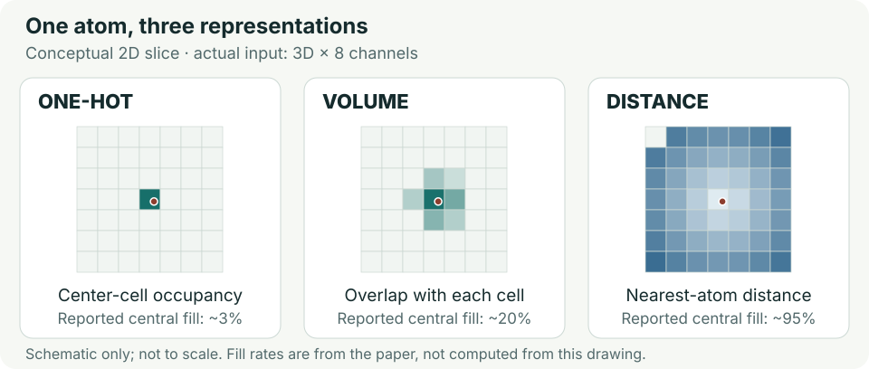

結合判定
構造予測の後に分類するAlphaFold Multimerの出力を、PPI / Non-PPIの教師付き学習へ接続。
AlphaFold Multimerの出力を、PPI / Non-PPIの教師付き学習へ接続。
1 Åの格子に、2鎖 × 4元素の情報を分けて格納する。
DeepTrio 0.845、SpeedPPI 0.817。ACCは0.818。
主集合はNegatome由来。追加集合のシャッフル陰性とは難易度が異なる。
2配列から、複合体になったと仮定したときの3D配置を得られる。実験構造がないタンパク質にも空間情報を用意できる。
非結合ペアも含めて、その配置から実際の相互作用を見分ける必要がある。平均pLDDTや単一のドッキングスコアだけでは正負が重なる。
従来の配列モデルは入手しやすい情報を使える一方、原子配置を直接扱いにくい。構造モデルは界面を扱える一方、実験構造の不足が制約だった。SpatialPPIは予測構造を利用し、単純な平均値に圧縮する前の空間情報を3D-CNNに学習させる。構造予測器そのものの開発ではなく、予測構造の活用法を示した研究である。
AlphaFold Multimer v2.3.1で、各ペア5つの複合体モデルを生成。
実験構造は入力に不要低信頼残基を考慮し、Cα間距離12 Åを基本に接触領域を抽出。
低pLDDTと閾値拡大の処理あり64 × 64 × 64、8チャネル。one-hot / volume / distanceを比較。
2鎖 × C・N・O・S最良構成はDenseNet3D。2クラスのsoftmaxとcross-entropyで学習。
KdやΔGは予測しない各セルから、同じ鎖・同じ元素の最も近い原子までの距離を記録する。半径12 Å以内を描画し、コードでは範囲外を0にする。鎖Aの酸素と鎖Bの窒素は別チャネルなので、2分子の配置を分けて表せる。残基間の距離行列でも、物理エネルギーを直接計算する方法でもない。
論文は4ブロック・各4つの3D畳み込み、dropout 0.2、batch normalization、縮小処理、global max pooling、全結合層を記載。学習可能パラメータ633,962。
24通りの回転と各軸±6 Åの移動を使う。反転は使わず、回転不変性を厳密に保証するモデルでもない。
論文：学習率10⁻⁵、正則化10⁻⁴、40 epochs、batch 32。
公開train.py：Adam、学習率10⁻⁴、200 epochs、batch 32、validation accuracyによるearly stopping（patience 20）。論文条件の再現には明示設定が必要。
正例はBioGRID v4.4.206、負例は実験的な非相互作用を集めたNegatome 2.0から取得。矛盾、重複、自己相互作用、類似した冗長ペアを除去し、各タンパク質が正・負の両方に登場するようにした。Negatomeの26.5%にBioGRIDとの矛盾があったと報告している。相互作用DBの陽性が、同じassayで測った直接結合を一律に意味するとは限らない。
表は横にスクロールできます。
| 集合 | 規模 | 評価設計 | 読み方 |
|---|---|---|---|
| 主データ | 375ヒトタンパク質 正600＋負600 | 5-fold CV。各ペア5構造を同じfoldに保持 | 論文の主要比較。抗体専用集合ではない |
| 追加データ | 正571＋負571 計1,142ペア | 片側配列をシャッフルして陰性化。この集合内で5-fold CV | 主集合で学んだ重みの外部テストとは異なる |
| CASP14由来 | 17件 | 主学習集合から配列同一性>40%の記録を除去 | 構造精度と分類の小規模な補足確認 |
出典：§§2.1、2.5、3.3–3.4、公式cluster.py。主集合との最大配列同一性25%という追加集合の条件は著者報告。
表は横にスクロールできます。
| 手法 | ACC | ROC-AUC | Precision | Recall |
|---|---|---|---|---|
| SpatialPPI | 0.818 | 0.892 | 0.832 | 0.796 |
| DeepTrio | 0.765 | 0.845 | 0.830 | 0.667 |
| SpeedPPI | 0.773 | 0.817 | 0.807 | 0.718 |
| D-SCRIPT 原版 | 0.631 | 0.679 | 0.852 | 0.317 |
| D-SCRIPT Topsy-Turvy | 0.736 | 0.741 | 0.755 | 0.698 |
| PEPPI | 0.680 | 0.762 | 0.906 | 0.402 |
0.892 vs 0.845。ACCは+5.3ポイント。SpeedPPIに対するAUC差は+0.075、ACC差は+4.5ポイント。
PEPPIのrecallは0.402。SpatialPPIは0.832 / 0.796で、偽陽性の少なさだけが優位性ではない。
差分は本ノートで算出。混同行列はTP 478 / FN 122 / FP 96 / TN 504。指標は論文表記どおりで、件数から再計算した比率とは小数末位に差がある。比較法には同一集合で学習したものと既存重みを使ったものが混在する。
表は横にスクロールできます。
| 構成 | ACC ↑ | ROC-AUC ↑ | 中央fill rate |
|---|---|---|---|
| DenseNet3D + distance | 0.818 | 0.892 | 約95% |
| DenseNet3D + one-hot | 0.640 | 0.735 | 約3% |
| DenseNet3D + volume | 0.665 | 0.772 | 約20% |
| ResNet3D + distance | 0.714 | 0.797 | 個別値の記載なし |
DenseNet3DではdistanceのACCがone-hotより17.8ポイント、volumeより15.3ポイント高い。「原子の点」より「周囲まで広がる距離情報」が有効だった。ただし疎性・情報量・最適化を切り分けた実験ではなく、常に密な表現がよいと結論できない。fill rateはテンソル全域ではなく中央領域での著者報告。
表は横にスクロールできます。
| 手法 | ACC ↑ | ROC-AUC ↑ |
|---|---|---|
| SpatialPPI | 0.835 | 0.920 |
| DeepTrio | 0.833 | 0.884 |
| SpeedPPI | 0.799 | 0.911 |
| D-SCRIPT Topsy-Turvy | 0.806 | 0.879 |
SpatialPPIとDeepTrioのACC差は追加集合で0.2ポイントに縮む。シャッフル陰性は自然な非結合タンパク質とは異なるため、このAUCを実務の外部汎化性能へ置き換えられない。
Figure 7では界面pLDDTの正負分布が大きく重なり、接触数やRosettaスコアにも単純な分離は見られない。Figure 8は、高pLDDTでも負例となる例を示す。CASP14由来17件の正分類は13件で、RMSD <5 Åでは11/13、>5 Åでは2/4。ただし小規模で、陰性との識別を十分評価する対照設計も示されていない。
出典：Table 2 / Table 3 / Table 4 / Table 5。全ベースラインに対する統計的有意差の報告は確認できない。

見る点： AlphaFold MultimerとPPI分類器の役割の違い。上記フロー図で再構成した。
構造がない配列にも使えるが、構造予測の処理は必要。CNNだけの計算量で全体の速度を評価しない。
原論文Figure 1へ · 原論文CC BY 4.0
見る点： AUC 0.892と、precision / recallの釣合い。上記横棒図・表で再構成した。
「すべての指標で最良」ではない。PEPPIのprecision 0.906とrecall 0.402も合わせて読む。
原論文Table 3へ · 原論文CC BY 4.0
図画像そのものの目視確認は未実施。本文のFigure 1–8の説明、Table 1–5と方法・結果の記載を確認し、概念と報告値を独自に整理した。
構造が得られること、結合すること、高親和性であることを、それぞれ別に検証する。
SpatialPPIは一般的なヒトPPIの分類器で、抗体専用の検証は行っていない。それでも、構造スコアを候補選抜へ使うときに、実測の非結合抗体を含む評価を組むという考え方は直接役立つ。
VHH＋抗原など2鎖の界面を、鎖別・元素別の距離場で表す発想。再学習と独立評価を伴う候補フィルターとして検討できる。
抗原単位・抗体系列単位の分割、実測binder / non-binder、PR-AUC、上位候補の実験ヒット率、親和性順位を評価する。これは本ノートの提案。
2分子が相互作用するかを判定する。親和性の大小や複合体構造の正しさとは別のタスク。
複合体の構造予測器と局所構造の信頼度指標。高pLDDTは実際の結合を保証しない。
空間を格子へ分割し、セルごとに複数の情報を格納する。ここでは2鎖×4元素。
前の層の特徴を後の層へ渡すCNN。特徴の連結、足し合わせる経路がそれぞれの基本。
全体の識別順位、陽性予測の確かさ、真の正例の回収率を見る。用途で重視する指標が変わる。
似た配列や同じ分子をtrain/testにまたがせると、性能を高く見積もりうる。ペアと分子の分割は異なる。
ユーザー指定の原著を、基盤論文として採用した。Figure 1・3、Table 2・3、実験陰性の議論を優先する。抗体親和性の実用モデル選定には、抗体専用の追加評価が必要。
調査日2026-10-20（JST）。ユーザー指定の1報を採用し、新着候補の選定は行っていない。主要数値は原著の掲載値を保持し、差分だけを本ノートで計算した。コード・JSONの確認と、モデル性能の再現実行は区別した。
アクセス記録：PMCの直接ダウンロードはCAPTCHAページとなったため中止し、Web閲覧で得た本文を利用。出版社の直接閲覧は403。原図は保存・転載せず、独自のフロー図・SVG・チャートに整理した。本文と数値はMarkdown版と共通。